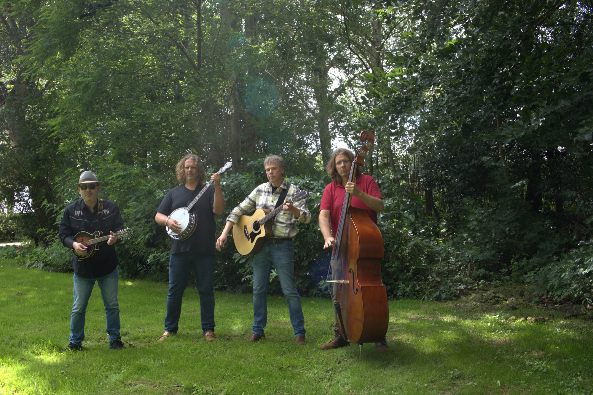
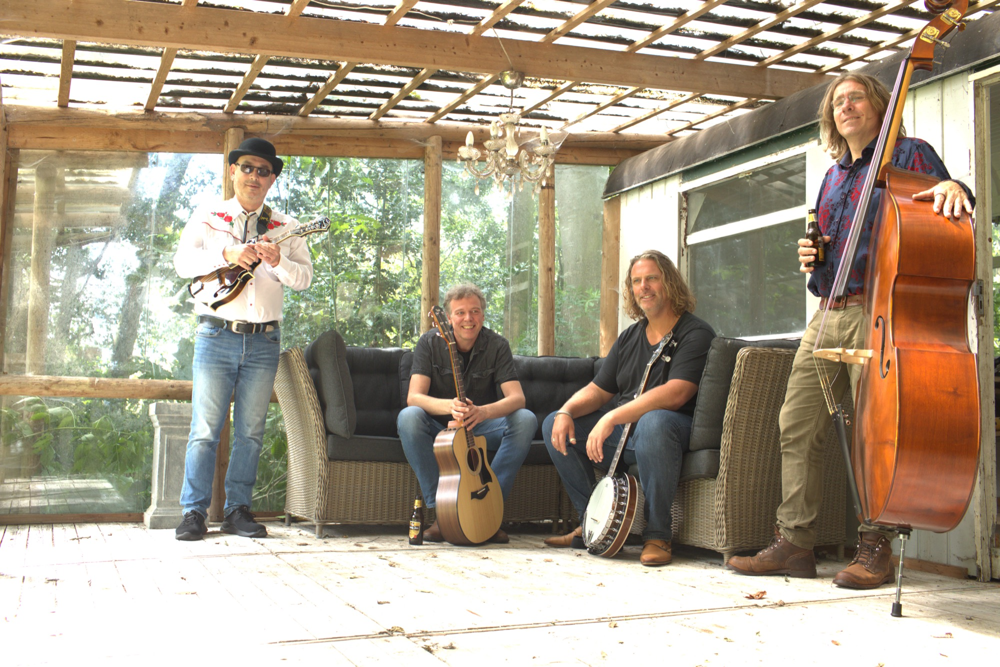
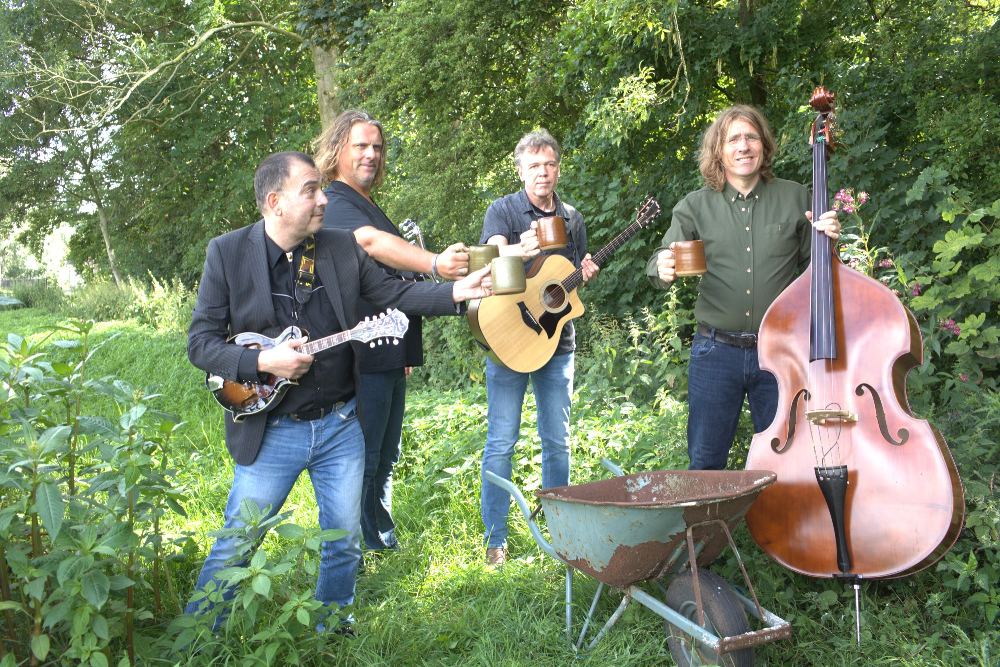
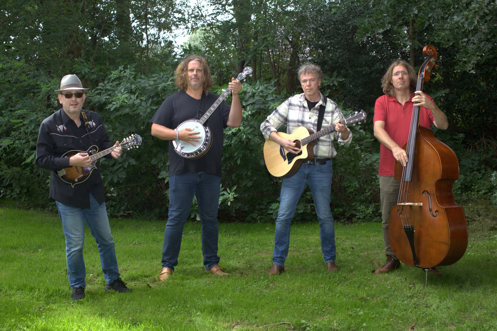
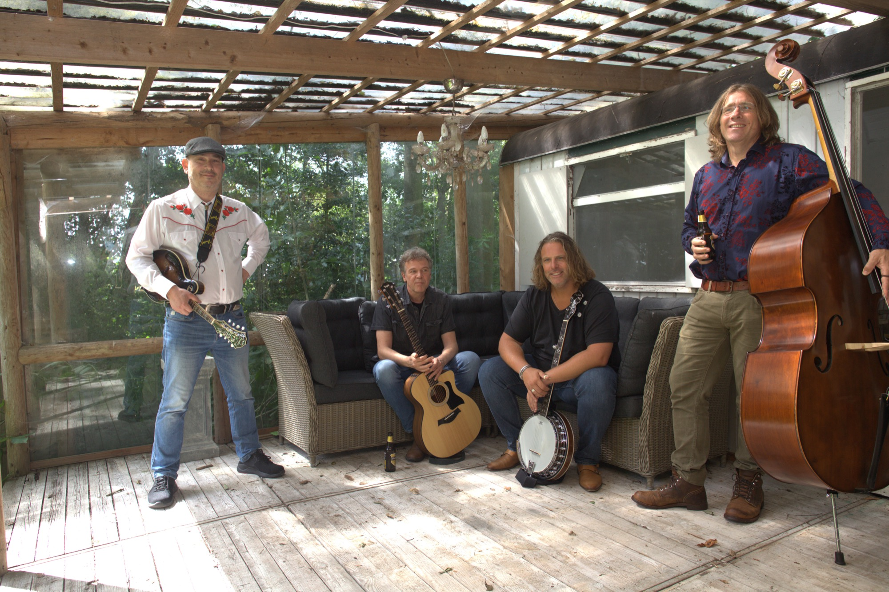
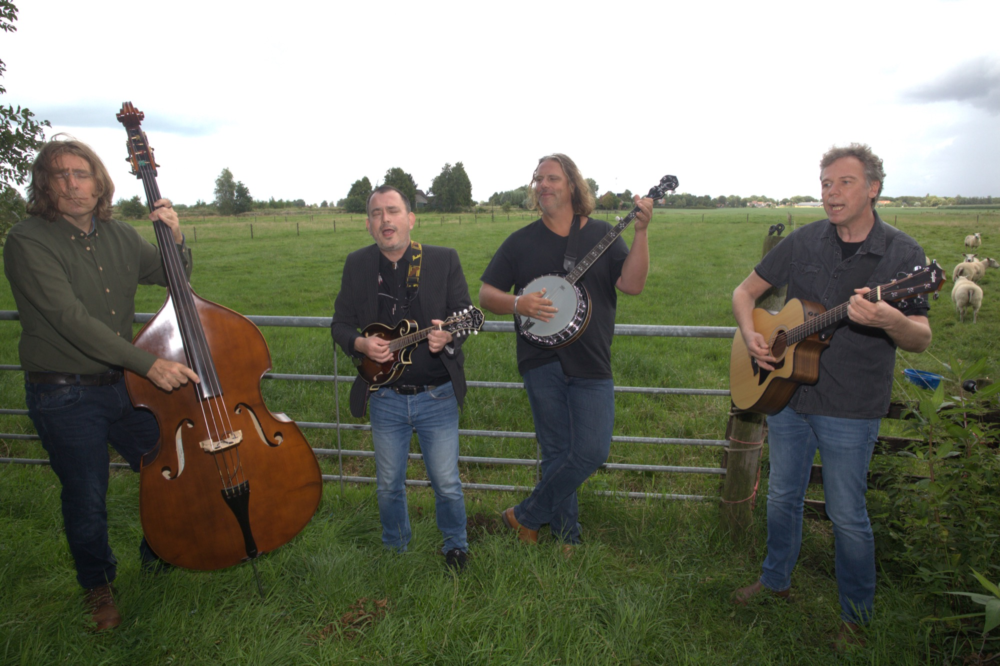
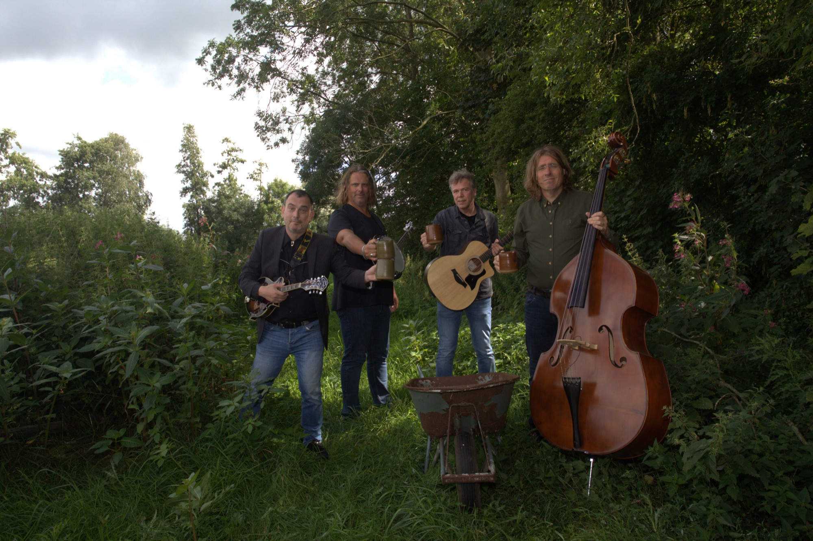

The Woodsmen is a four-piece Americana, Bluegrass, Country, Blues, and Folk formation. The band uses a variety of traditional instruments, such as the good old steel string, 5-string banjo, mandolin, box guitar, & upright bass.
Raised on completely different musical styles, the band members still found each other in this Americana combination.
This diverse musical background is certainly audible during a performance by The Woodsmen. In addition to treating the audience to authentic Bluegrass classics, you might also hear country versions of AC/DC and Elvis Presley songs when The Woodsmen take the stage. You’ll even get to hear their own original material.
This song selection, combined with the joy the band members clearly have in performing together for an audience, makes it well worth checking out The Woodsmen!
Videos
Music
Photos








Gigs
2026
November 22nd – Gasselte
2024
June 13th – Herewegbuurt Groningen, Zomerkuier
2023
October 11th – Groningen, Riemer
July 15th – Linde, ZomerGoed festival
May 25th – Marum, Kerk Noordwijk
May 21st – Groningen, De Wolthoorn (Driekdag)
February 15th – Roden, Boekhandel Daan Nijman
January 27th – Groningen, RKZ Kapel
January 26th – Eenrum, dichtersfestival
2022
May 22nd – Groningen, De Wolthoorn (Driekdag)
2019
November 8th – Groningen, Lutje Root
November 2nd – Amen, De Amer
June 27th – Groningen, ArchiDoeDag
2018
December 22nd – Groningen, Winter Welvaart
2016
May 28th – Groningen, Willemstraat 150 jaar